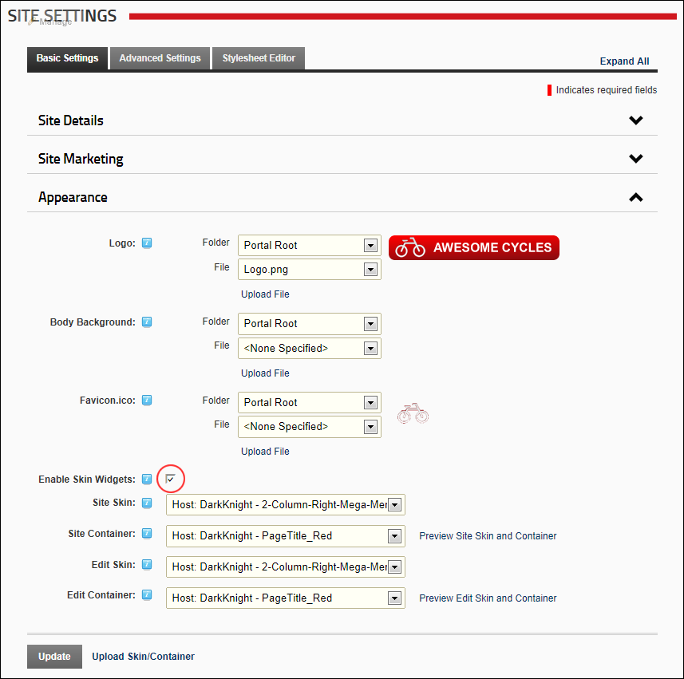

Enabling/Disabling Skin Widgets
How to enable or disable widget functionality in skins. Enable this setting to enable JavaScript/HTML widgets that have been included in skins. The skin widget field is associated with the Widget skin object.
- Navigate to Admin >
 Site Settings.
Site Settings.
- Optional. Click on the country flag icon associated with the culture (language) to be updated. This field only displays when multiple languages are enabled. See "Viewing a Site in a Secondary Language"
- Select the Basic Settings tab.
- Expand the Appearance section.
- At Enable Skin Widgets, select from these options:
- to enable skin widgets.
- to disable skin widgets.

-
Click the Update button.